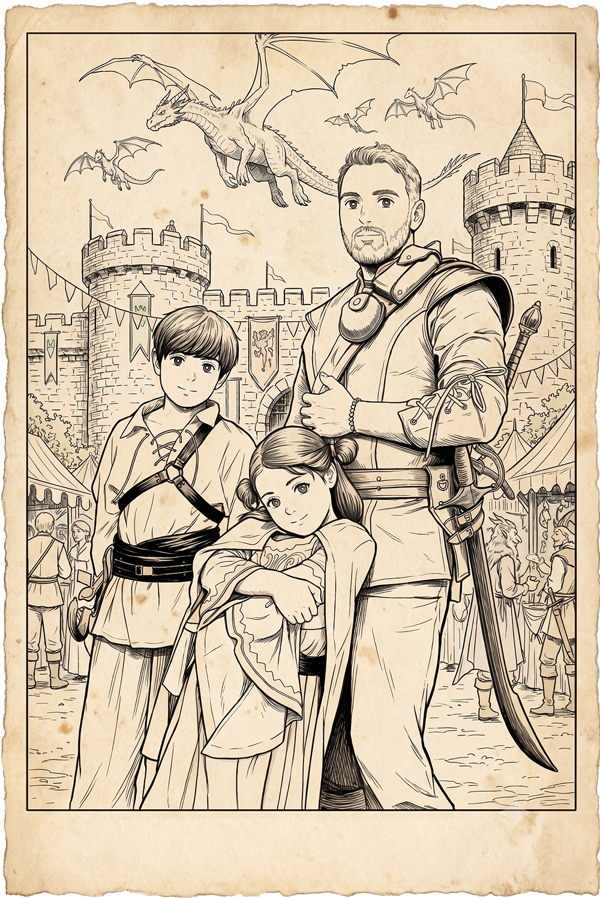

Chapter 1 of 4
Clan Farooqi
The Adventurer, Ausaf, accompanied by his two closest companions, his son Ismael and his daughter, had built for themselves a home in their tiny corner of the world. Yet, within that home, and within their party itself, something remained missing…
